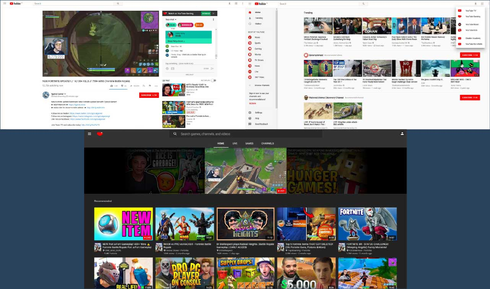

YouTube UX Optimization / Redesign
UX/UI Design
As live streaming has become more mainstream and a place to relax, talk, learn, enjoy, and participate within a community, it makes sense to optimize the website and uniquely incorporate it to grow usage and engagement.
Part 1: Context
Live streaming is becoming more and more a part of global life ranging from live feeds of events to gaming
As the world reaches a more connected age live streaming services like YouTube Live, YouTube Gaming, Facebook, and Twitch have been making huge growths over the years. YouTube Live has been reported to have grown "343% versus one of it's largest competitor Twitch at 197% during 2017"(StreamLabs 2018) . Emerging out YouTube Gaming needs to find it's own spot as a streaming platform and currently it feels a little disjointed from the main YouTube base. I intend to optimize the website so that viewers can enjoy live streaming faster and engage themselves to have a great experience.
Part 2: Process
YouTube Gaming felt distant to YouTube's main user base
If YouTube Gaming is ever going to connect and engage with more users and take advantage of YouTube Live and the main website, it needs to be accessible and visible to viewers who browse those parts of the websites.
When hearing the words "YouTube" and "Live", viewers would not expect to hear game streams and only live broadcasts of other types of content. Solidifying the paths that viewers take from the website to streams is a first step in creating a more "omnichannel" style of website incorporating live streaming into YouTube as a whole.
There are multiple paths to get to a streamer's channel with no real indication if you are on the main site or on YouTube Gaming until you start to watch the stream.
My Role:
Design, Research, Visual Prototyping
Tools: Pen, Paper, Axure, Persona Generation, Use Case exploration, Use case Design, Online research
Focus Area: Understanding the User, Find the Problem
To connect the user faster from discovery to enjoyment, I explored what the trouble areas were and how it related to usage. I designed two use cases for the current experience: one to find a random stream to watch in the background, while the other to see how actively viewers can engage as part of the community.
There were too many ways to get to a stream for just finding one quickly and randomly, They all are also using different context to arrive at the same place making it very confusing.
While the community engagement design was certainly better, it feels passive as it incorporates the card's function from YouTube's main site for engagement such as polls and links to related media.
Focus Area: Visualizing a User-Centric Solution
The Revised Design is much simpler: An optimized pathing through YouTube's main website, you can reach live streaming quicker and easier and engage more actively with the community
Having Live and Gaming incorporated into YoutTube itself, it is less confusing/slow to reach a random streamer to watch as with the first use case; viewers don't want to spent forever to find one while work needs to be done.
I designed a new way for YouTube cards to be where the viewer would be actively engaged: the chat area. This allows the viewer to see things at a glance, being able to reach polls or streamer picks faster.
Visuals and placement allows the viewer to feel like everything fits. An "omnichannel" where it is part of the whole YouTube experience and engagement is tailored to where attention for input is directed to during the stream.
I was able to prepare a greater user flow that focuses delivering the user to the core elements efficiently.
The Home page and Live pages reflect a fusion of YouTube and YouTube Gaming elements: Being able to tab within the website create the "omnichannel" feel. The way to watch streams on the "live" tab allows the viewer to watch something right off the bat and a way to go to a random stream if they want easily.
Within the stream, YouTube's cards are displayed in the chat area, allowing for active engagement for polls and other related links/annotations that engage the viewer more actively in addition to what is already present instead of a passive menu hidden within the video screen as per normal YouTube videos.
Part 3: Reflection
I was able to find a way to enhance a user's experience. When I was actively using the service it always seemed odd trying to find this side of Youtube. This has allowed me to practise my UX and Interaction Design skills and able to bring about a solution that makes sense.
References: Hicks, Antonio.(25 January 2018). Streamlabs Livestreaming Q4 Report: Tipping reaches $100M for the year; YouTube Dominates in Streamer Growth, increasing by 343% as Twitch rises 197% in 2017. Streamlabs. Retrieved from https://blog.streamlabs.com/streamlabs-livestreaming-q4-report-tipping-reaches-100m-for-the-year-youtube-dominates-in-4bf450fae536
Here is a visual prototype you can explore around in. Created in Axure, a good interactable mock-up of what the redesign feels like going from one page to another.
Visual Prototype

{kind=link}
{kind=link}
{kind=link}
{kind=link}
{kind=link}
{kind=link}
{kind=link}
{kind=link}
{kind=link}